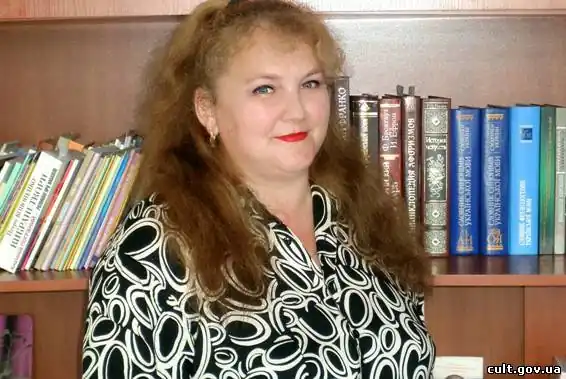
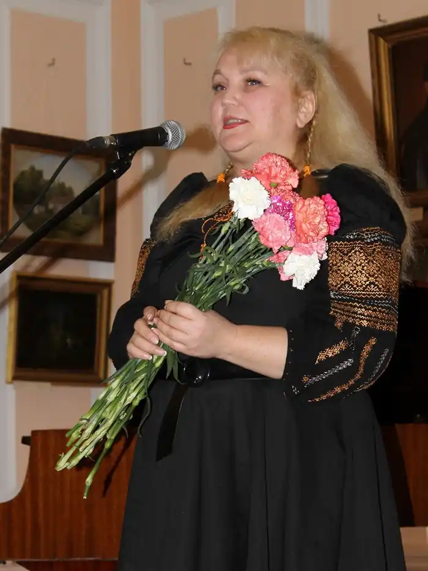

Арсенич-Баран Ганна Василівна народилася 26 червня 1970 року в селі Нижній Березів Косівського району Івано-Франківської області. У 1992 році закінчила філологічний факультет Івано-Франківського педагогічного інституту імені Василя Стефаника. Працювала на Гуцульщині, де широко друкувалася в місцевій пресі, де звучали її пісні, де, зрештою, 1997 року вийшла з друку перша її збірка поезій – "Рушник на калині". Книга припала до душі й критикам, і передовсім читачам.
1998 року разом з чоловіком, священиком Мироном Бараном, та сином Іванком переїхала до Чернігова, де стала вчителькою школи-ліцею № 15. Дуже швидко завоювала авторитет серед колег і школярів, активно включилася в громадське життя міста. Ганну Василівну можна бачити на всіх найважливіших заходах, що проводяться товариством "Просвіта", Чернігівською організацією Національної спілки письменників України, членом якої вона стала 1998 року після виходу у світ другої поетичної збірки "Музика черемхи". Лауреат обласної премії імені М.Коцюбинського 2006 року за роман "Тиха вулиця вечірнього міста".
Нині робочий стіл письменниці рясніє новими поезіями, оповіданнями. Видруковано книги – "Розквітлий глід", "Солодкі слова", "Молитва небо здіймає вгору". Працює Ганна Василівна у Чернігівському обласному інституті післядипломної педагогічної освіти імені К.Ушинського. Живе в Чернігові. Є автором: — поетичних збірок "Рушник на калині" (1997), "Музика черемхи" (1998), "Розквітлий глід" (2001), "Тремтять гіацинти" (2003), "Обнадію весною" (2005), — книжок прози "Під райськими яблучками" (2001), "У понеділок все буде по-іншому" 92003), "Як зійде місяць" (2005), "Солодкі слова" (2010) — роману "Тиха вулиця вечірнього міста" (2005).